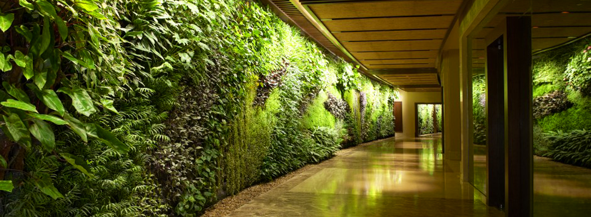
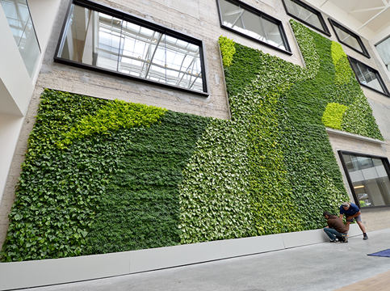
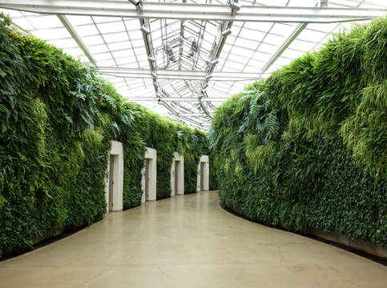
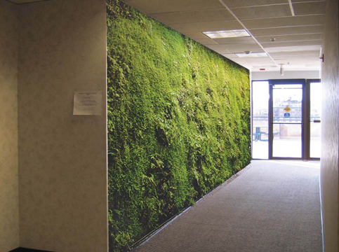
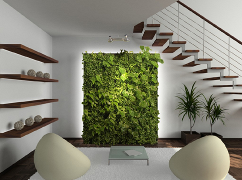
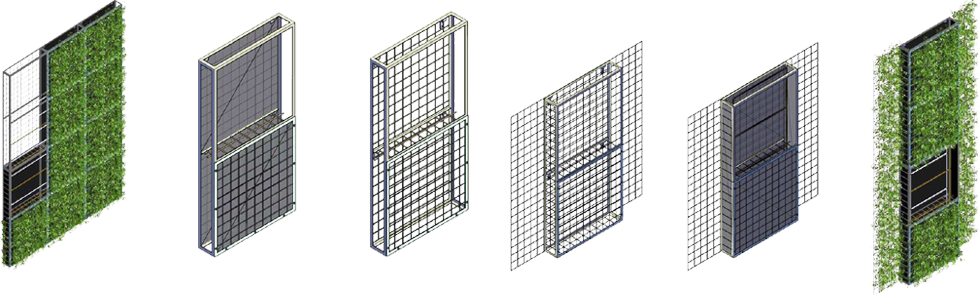

グリーンデザイン
グリーンデザイン

現在多様性を模索し続けている「緑化」の世界、それは店舗や事務所、大きなステージや野外においても沢山の需要が見込まれている新しい”人と自然の共存”空間。
今迄もガーデニングや行政援助による企業の屋上緑化事業などメディアの話題に上る「緑化」は在りました。私達スタジオ縁が推進し、提案するのはその中でも新しい緑化事業「壁面緑化」です。壁面緑化って何？と思われる方、実は意外と目にしているかもしれません、これは全てグリーンデザインの一環であり、壁面緑化の一例でも在ります。
 
野外やエントランス部分が大部分を占めると思われがちな壁面緑化、海外では２０００年頃を境に実に多くの企業が屋内に取り入れています。国内でも外資系を中心に今迄の様なアクセントとしての緑化では無く、存在感の大きな壁面緑化の魅力を生かしたオフィスデザインが台頭し始めています。
 
この壁面緑化の流れは企業から個人事務所などへその思想が流入し、最近では一般家庭のプライベート空間にも希望されるお客様がいらっしゃいます。企業ベースの様な大規模な施工でなくてもリビングなどのフラットな壁がアイディア次第では一番のリラックスエリアへと様変わりする可能性も在るのです。
注目されつつある「壁面緑化」、更に詳しくしってみたいとは思いませんか？少しでもご興味が湧いた方はお気軽にスタジオ縁「問い合わせフォーム」からご連絡下さい。
壁面緑化の素晴らしさは実際に目で見る事で更に印象深く、そしてその効果を知る事が出来ます。しかしそんな緑化への一歩を踏み留まる要因、それは導入プロセスの先入観かもしれません。
野外においての壁面緑化は季節や気候に左右こそされ、その構成は基本的に一般的な造園フローと変わりません。しかし屋内における壁面緑化はシステム化されたパッケージ単位で構成構築していきます。
意外と思われるかもしれませんがその導入は驚くほどスムーズ、そしてメンテナンスは難しく在りません。幾つかのパッケージが在りますが既存の構築方法は以下の様な物です。

現在のシステムにおいてもこれだけスマートに設置出来る壁面緑化、しかしその有用性が認められれば認められる程これからのパッケージは多様性と拡張性に更なる広がりを魅せる余幅多きカテゴリーなのです。
アイディア次第では無限の魅力と表現を併せ持つ壁面緑化、その可能性の見本としてこの様なパブリックスペースにおける施工例も在ります。私達の提案は元より、もしその可能性に更なる付加価値を見出す事が出来ましたら是非ともスタジオ縁にお手伝いさせて下さい。
一般造園業からスタートした私達スタジオ縁、その名の通り「縁」を大切に沢山のお客様に支えられて色々な植物に関する事業に携わっています。推進業務で在る「多様性と拡張性の高い緑化」は壁面緑化だけでは在りません、シーズンテーマやコーポレートテーマに沿ったご提案を随時提供出来る様に日々努力を惜しみません。
これからも新しい「緑化」の形を模索し続けるスタジオ縁、その提案事業にご興味が在りましたら是非お気軽にお問い合わせください。緑化設計の無料相談は「設計相談」から、一般業務に関するお問い合わせはお電話か「お問い合わせフォーム」からお気軽にどうぞ。